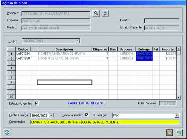
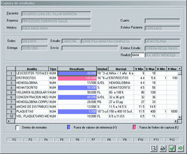
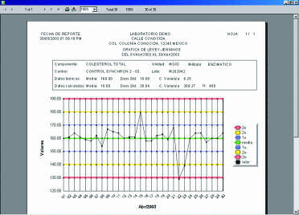

xLab - Sistema para el control y operación de laboratorios clínicos
¡Muy pronto estará disponible xLabWeb, la versión de xLab en Internet!
xLab es un sistema para el apoyo operacional y el control administrativo integral de un laboratorio de análisis clínicos.
xLab proporciona una herramienta eficiente para el manejo de pacientes, sus resultados y la administración de las diversas funciones de un laboratorio. Cuenta con un acceso controlado para compartir la información de los pacientes así como para la transcripción de resultados, la facturación de los cargos del laboratorio y su cobranza en forma expedita. Incluye un control de inventarios para el manejo de los suministros utilizados dentro del servicio.
Permite la captura de resultados tanto de tipo numérico como textual con diversas herramientas de ayuda como captura guiada, teclas de función programables, etc.
El sistema xLab tiene la capacidad de conectarse a un sistema hospitalario de forma automática o por medio de interfaces para accesar o actualizar la información de pacientes, el expediente clínico así como la información administrativa de facturación y cobranza.
También hace posible la utilización de interfaces para la conexión y transferencia automática de información desde equipos clínicos automatizados.
Características Generales
- Aprovecha todas las ventajas de una aplicación diseñada y desarrollada para Windows: interfaz de usuario gráfica y amigable, capacidad de compartir la información con otras aplicaciones de Windows como Word, Excel o Access entre otras.
- Permite la utilización de prácticamente cualquier base de datos para el almacenamiento de la información de pacientes y resultados.
- Disponible en versión monousuario o multiusuario (red).
xLab representa una nueva generación de sistemas de información de laboratorios ("LIS") donde se han integrado la experiencia de numerosos profesionales de la salud así como expertos en tecnología de información para obtener un sistema que es flexible, fácil de utilizar, económico y fácilmente expandible.
Registro de pacientes
- Información demográfica del paciente
- Información sobre familiares o contactos
- Datos sobre el seguro o el tipo de cliente
- Control de citas a pacientes
- Instrucciones de preparación al paciente
- Datos de muestras de patología
- Conexión automática con el sistema hospitalario
Ordenes de pacientes
- Ingreso de los estudios de laboratorio
- Cálculo automático de fechas de entrega
- Manejo de estudios urgentes
- Cargos extras por domingos, días festivos y urgencias
- Impresión de etiquetas con código de barras
- Hojas de trabajo por prueba o área de trabajo

Resultados de estudios
- Captura de resultados numéricos y tipo texto
- Teclas de función programables por cada prueba
- Valores de referencia y valores límite de captura configurables por prueba de acuerdo a sexo y edad
- Componentes calculados en base a fórmulas configuradas por el usuario
- Procesador de palabras interno para resultados tipo texto
- Validación de los resultados por el personal autorizado
- Formatos de impresión individuales en Word o impresión en formatos genéricos
- Control de entrega de los resultados
- Consulta de resultados históricos

- Nombres cortos y sinónimos para pruebas
- Días de procesamiento
- Características de las muestras
- Componentes y valores de referencia
- Múltiples listas de precios
- Histórico de precios por prueba
- Aumento automático de precios
- Descuento o crédito por tipo de cliente
- Empresas de seguros
- Artículos, almacenes y proveedores
Ordenes de piso
- Solicitud de órdenes de laboratorios
- Desde un piso o consultorio
- Consulta de estatus de órdenes solicitadas
- Consulta de resultados
Facturación y Cobranzas
- Toma en cuenta las características del convenio como descuentos y créditos
- Cobro de coaseguros y deducibles
- Controla en forma completa y detallada la cobranza a las empresas
- Integración de facturas para cobro
- Fechas de revisión y contrarecibos
- Recepción de pagos
- Notas de cargo y crédito
- Pronósticos de cobranzas
- Control de la antigüedad de saldos
Caja General (Pagos)
- Pagos parciales o totales
- Diferentes formas de pago
- Control detallado de saldos por paciente
- Manejo de múltiples cajas y turnos
Almacén
- Control del inventario de reactivos y suministros
- Ordenes de compra manuales y automáticas
- Recepción de artículos
- Despacho hacia áreas de servicio o sucursales
- Control de fechas de vencimiento y lotes
- Manejo de múltiples almacenes
- Inventarios físicos
Control de maquilas
- Laboratorios de referencia o maquiladores
- Calificación de maquiladores de acuerdo a criterios de calidad, tiempos de proceso y costos
- Manejo de listas de precios por cada maquilador
- Selección óptima del laboratorio para envío de cada muestra
- Impresión, control y seguimiento de órdenes de trabajo
- Manejo de alarmas para resultados tardíos
- Conciliación y generación de órdenes de pago por maquilador
Interfaces con equipos clínicos
- Transferencia electrónica de información desde los equipos clínicos
- Interfaces para diversos equipos de las áreas de: química clínica, hematología, bacteriología e inmunología
Control de calidad interno y externo
- Aseguramiento de la calidad de los resultados de laboratorio
- Presentación de alarmas para resultados fuera de control
- Registro de reactivos de control
- Registro de valores teóricos de media y desviación estándar
- Método y unidades de medida
- Configuración de intervalos de aceptabilidad o reglas de Westgard
- Generación de gráficas de Levy-Jennings
- Captura de información relevante de los diferentes programas de control de calidad externo

- Reactivos y suministros promedio utilizados por prueba
- Comparación con la utilización real de acuerdo al número de pruebas realizadas
Consultas por Internet xLabWeb
- Resultados de laboratorio
- Estado de las órdenes de laboratorio
- Panel de control para consulta de condiciones de alarma o estatus de la operación del laboratorio

Obtenga esta página en formato PDF: 
Si requiere más información por favor llene la siguiente forma.
Vea también:
- xHosp - Sistema integral para la administración hospitalaria
- xBlood - Sistema para el manejo de bancos de sangre
- xRay - Sistema para el control y operación de gabinetes de rayos X e imagenología